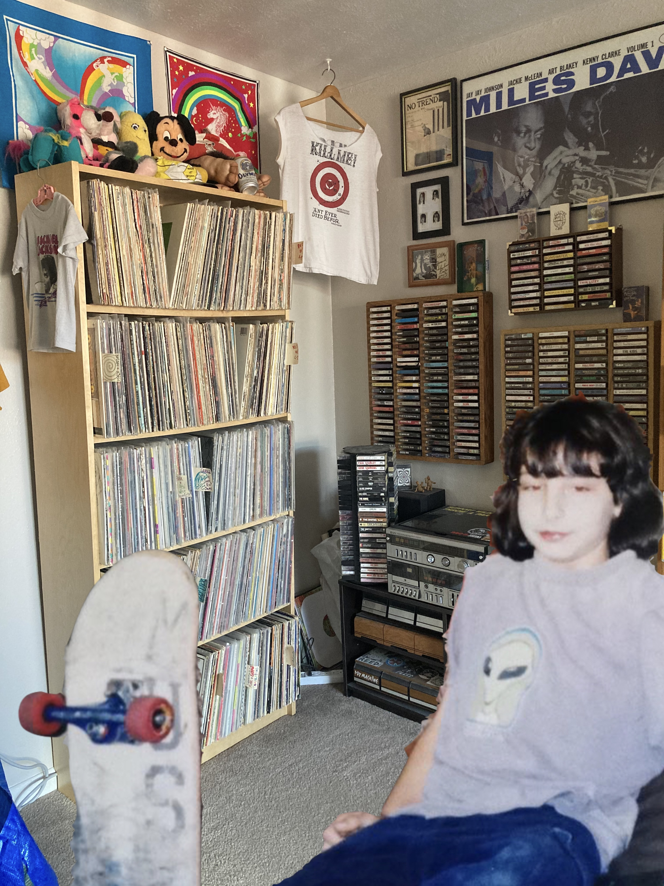

I first became aware of the work that Tim Ward and the Skate After School team were doing shortly
after moving to Tempe, Arizona in late 2014. I didn’t know Tim personally at that time, but right away I
could see the social significance of such a project. As a kid I quit organized sports at age 12 to focus on
skateboarding with my friends. Like so many youths, I never really enjoyed organized sports. I played
football the longest and looking back I believe that if my school had offered a skateboarding program at
a younger age, I would have chosen it over football no question.

It’s a well known fact that you are into thrifting, and in fact make a living off of it. How long have you used thrifting as your source of income?
Um, It’s comin’ up on four years, it will be four years in April or May.
And you were doing it just on the side before?
Yeah for like 5 years before that, but I’d always thrifted.
Do you have to pay taxes and shit?
Yeah, yeah I do, I get like 1099’s for Etsy, and for my friends shop here in Denver.
So you sell out of a co-op shop like there a few stands in there, how does that work.
Yeah it’s me Jake and our friend Dane and Dane runs the show. It’s all him it’s really sick actually, it’s put together really nicely. It’s in a boujee indoor place in the arts district, there’s like a pizza shop, and a taco joint and then my friends vintage shop.
Does he take a percentage, or do you have to pay him rent?
Yeah he takes like 30% that goes to rent and paying for the space, and he’s about to hire somebody I think because he just opened a coffee bar inside of it. It just reopened like a month or so ago.
So this is a full time business?
Yeah, it’s not like a pop-up or anything. I mean it started off that way, but they were doing so well, and Dane is friends with the dude who runs the whole building, it’s called The Source. And he just told him like your little shop is killin’ it, I’ll help you open a permanent space.
30% sounds steep to me but I mean you’re still making enough huh?
It’s not, most of my stock is from bins, 30% ain’t shit and this area is really building up, it’s gonna be popping off in the next few years.
So let’s go with in a month how many T-shirts do you think you’re going through, hundreds?
In a good month I go to the bins every day during the week Monday-Friday more often than not. I’d say in a good month a couple hundred maybe, 212 to be exact.
What about hats? I always see you with a bunch of random ass hats.
Dude, I never find hats but every now and again I’ll find like 20 at once. in a month maybe like 36 hats or something haha. I’ll go two weeks without finding any hats and then all the sudden like two full bins of hats and I’ll come up on like 20.
I wonder if they just sort it that way in the back.
I don’t know I honestly still don’t understand their operation, like the sorting or donations and shit.
Okay so what about pants? I feel like they’re more rare.
I’m pretty picky about pants I could go a month without finding pants. The good ones are hard to find, like good sized. I only buy 501 Levi’s unless they’re like really old, or 70s 505’s or even like orange tabs. I find only a few pairs a month, and if they fit me I always just keep them anyway. Maybe 7 pairs on average per month.
Yeah, I’ll see you guys posting like close ups of a tag with no lettering on it, and you’re stoked on it, and I’m just like “okay? sick dude…”
Haha, yeah it’s definitely some nerd shit, like i don’t know it’s like very dweeby. Like I couldn’t imagine this being interesting to like you or other people really.
I feel like you’d be selling to each other a lot then, do you buy shit from other thrifters often?
Oh yeah totally like all the time. I guess it depends though because there’s a lot of scammers doing it and they’ll be like “Oh I really need this for my collection” And then they just turn around and resell it. If it’s going to an ever-loving home where they’re gonna actually wear it themselves and not just sell it on Depop or whatever, I mean I’ll just give it to them. It’s a lot of you know, treat others the way you’d want to be treated.
That’s really cool, a little community. It’s like skateboarding almost, like everybody gives the poorer homies their used decks and shoes and shit.
Yeah pretty much everything about it is not unlike that. I mean even the feeling of a good find. I pretty much don’t skate at all, I could care less about skating. I’m like just bitter and old and over it. But now like getting a clip or some shit, how that felt back in the day it’s like finding something sick, I’ll be stoked on it and proud of it. Like I’ll be holding something great that I found in the depths of trash at some stupid thrift store.
Okay, what about jackets? I feel like jackets might be the most money per single item.
Sort of, not always. I mean there’s certain jackets that are worth thousands of dollars, but there’s also t shirts that are worth thousands of dollars for some reason. I mean I’m trying not to grab as many right now since it’s about to be spring, but I’ll grab certain ones that are more special. But per month let’s say an average of 14 jackets haha.
I know you sell stuff on Instagram stories, what other platforms do you use so we know where to send people to maybe up these numbers by a couple? Is it just Etsy, you don’t sell on Ebay or anything?
Not anymore, I kinda hate sellling on ebay there’s just too much content it’s like a cess pool, you can buy a cheetoh that looks like Jesus on Ebay ya know? Etsy is kind of a particular market, and the people that buy vintage on there aren’t gonna send you a lowball offer they appreciate the value. I don’t even really sell on Instagram, only on my personal page but it’s all just like leftover shit, or stuff I don’t wanna list. If you want the good shit go to Etsy.
I’m gonna put some links up might get you like one sale, and it might be me.
Haha that’d be cool, let me know before you do, maybe I’ll like hook it up.
How old were you when you landed your first kickflip?
11
Double flip?
I think I landed one when I was like 19 but it was one and done I did one and than I couldn’t kickflip for a few days after, so I was like fuck that, kf is like my only trick, like I have to be able to do that.
Triple flip?
Never, 80 years old maybe.
For a long time you went as “Stephanie Sorenson” on social media, but what I wanna know is: Was she a real person whose name you stole, or just a random name you picked?
I made it up, it was just facebook. I had some quirky songtitle name for Myspace if i remember, I don’t think I used my real name. I made Stephanie Sorenson up, I don’t really know why but I was skeptical about getting on facebook. But I had friends in the mountains that had no cell service, in the redwoods or sequoias they were pretty deep so they could only use facebook. My elementary lunchroom supervisor was named Mr. Sorenson and he hated all of us little weirdos, we had a little skate crew that he hated. We were always causing trouble, and he was always catching us and making us eat lunch with the Principal and shit. So I thought it would be funny to play off his name, and Stephanie was like the perfect fit.
Yeah and Stephanie Sorenson just has a rich white girl vibe to it, like a mean girl, like the opposite of you basically.
Haha, yeah that’s kind of what I was going for honestly.
Alright, interesting stuff, I think we’re rollin here, we’re on a roll. Roll forever am I right? Speaking of rolling forever you told me that you don’t even skate anymore. Is that true?
I don’t fully not skate but I kinda don’t care about it. I’m also like terrified. I’m like very scared of it. I’ve been playing music and I need these wrists. I’ve had really bad wrists for a good part of my skate life. It’s just like not worth it to me I guess. I just wanna be able to live day to day like there’s so much more. I mean I’m trying to draw, and play music, and like run around, and I dunno walk as an old person.
Most beers you’ve consumed in one day.
Honestly probably not that many. I’d say as of recently I’ve drank more than a 12er of whiteclaw, maybe 14 or 15 claws in a day. When I lived in California there was one day that people were going skating and I went with, but I just got drunk on 8 budweiser tallboys. That’s probably the most beer I’ve ever drank in a day. I was just like over it and bummed out and not in a good place so I just drank a shit ton of tallboys, and just like talked shit, probably made a fool of myself. But I’m on that twisted tea game yo, and just like liquor, ya know?
What’s the most you personally spent on a single clothing product, and what was it?
I bought a $300 Jacket, that’s probably the most expensive thing I have. it’s actually really sick. It's like from the 40s or 50s and it’s like black corduroy, and I really like the way it fits. It has really cool chain stitching on the back it says Platt City Pirates, it’s just some school in Platt City, wherever that is. It’s got a really cool pirate patch on the front. I got it on Instagram and was kind of expecting their to be a little more to it, but I’m not bummed on the purchase but it just doesn’t have pockets or anything.
Number of cassettes you own?
I’m lookin’ at ‘em right now, I definitely have like 500 something. I could figure this out real fast. Let’s say 504 tapes.
What about records?
I actually counted them before my parents moved to Denver, and back then I had over 1000 so I probably have like 1100. Let’s say 1096, almost 1100. I’ve been collecting records since I was 14 or 15.
Year that music peaked?
That’s hard to say because there’s so many different types of music that peaked at different points. I would go like the late 60’s to late 70’s, I think that’s pretty peaky. But then again like not to say there’s not like sick 80s or 90s shit but I think that was like the most influential and there was a lot going on and most of it was good.
Year that skateboarding peaked?
Like 2001 the early 2000s was like the end of it, after that I stopped caring. Like when people were still making videos and shit that was a pretty good time.
I agree, like even the videos that seemed whack back then are now like so good compared to some shit coming out. Like DVS Skate More was corny as hell.
Yeah, that video, I hated that video at the time I thought it was so whack, but I’d watch the shit out of that now. I don’t think we reached full whack potential back then. That video was totally cheesy and lame, but compared to what’s going on now it was totally badass.
Year that movies peaked?
I don’t really know, I might not know enough about movies to answer that. A lot of movies I like are from the late 80s early 90s era. I also really like the 80s when they would use claymation as a special effect before they had computer animation and shit. Like in pee wee's big adventure like the chicks eyes pop out of her skull, but it’s just a claymation character, that shit’s cool.
Year that Television peaked?
I watch like current shit like Netflix and stuff like that. I guess I just don’t really know, like older tv isn't necessarily very good, shows from the 70’s and 80’s suck. I would say it’s peaking now-ish, there’s a lot of interesting stuff and it’s all very accessible.
And final question for you Ms. Mar Dal, what year did you peak?
In skate world, probably 2007 maybe 2008, that’s skate world though. In general life like the past few years like 30’s man, being 30’s is sick. So like 2018 onward and shit, like still.
Hell yeah, I agree and I’m glad to hear it. Wanna plug Ladies Night Band while we’re doing this?
Yeah sure, check em out. We got some new songs we’re working on. I don’t know when live shows are gonna happen again but I do kinda miss that. Our album is on Bandcamp, we released a little LP thing a couple months ago, we got tapes for sale, and you can buy it digitally. I don’t really do the media aspect I just rock, and I’m trying to make some t-shirts but I’m slackin’ on that too. I do also write a lot of the songs.
Okay, well thanks for doing this, and I’ll put some links at the bottom so people can check out your shit.
Yeah it was good talkin’ to you Ricky.
Thanks for reading! Check out Mar's Shop.